Handling files and folders¶
There are four main scenarios to consider when using files and folders in the G&H TRE:
- Moving files or folders from a GCS bucket to your
homedirectory - Moving files or folder from you
homedirectory to theredGCS bucket - Creating/renaming/moving/deleting files and folders in the
redGCS bucket - Creating/renaming/moving/deleting files and folders your
homedirectory
All operations mentioned in items 1, 2 and 3 above can be completed using gcloud storage commands. All operations in item 4 can be performed using standard unix/linux shell commands (e.g. cp, mv, rm, mkdir) or the File Manager GUI.
Reminders
- Google Cloud Services (GCS) buckets are explained in the "Understanding TRE folders and buckets" section.
library-redis a read-only bucket for TRE users, you cannot add to it or make any changes to it.- Your
homedirectory "belongs" to the virtual machine. It behaves like a standar unix/linux files system. Its actual path is/home/ivm/.
Google Cloud Services’ gcloud storage¶
What is gcloud?¶
gcloud is the Google Cloud Services' Command Line Interface (CLI): a set of tools to create and manage Google Cloud resources. gcloud has multiple GROUPS which handle a specific aspect of the Google Cloud. For example, gcloud sql handles the creation and management of Google Cloud SQL databases and gcloud source handles cloud git repository commands.
The only gcloud GROUP of relevance to the G&H TRE is the storage group. gcloud storage handles the creation and management of Cloud Storage buckets and objects (files).
gcloud storage documentation can be found on gcloud storage reference website.
What if I’m using gutils?
Some of you may have been using gutils to manage Cloud Storage buckets and objects. The gutils commands are now deprecated.
⚠️ BE CAREFUL:
- Google states: "Important:
gsutilis not the recommended CLI for Cloud Storage. Usegcloud storagecommands in the Google Cloud CLI instead." - We advise you against using of
gutils. Thegsutiltool does not support working with newer Google Cloud Storage’s features such as soft delete. This means thatgsutilremoves all versions of a file, whereasgcloud storageonly removes the latest version. - We have bucket versioning switched on in sandboxes as part of the backup strategy (so we can recover an old version of a file for users). If you delete with
gutils, we may not be able to recover the file(s).
TL:DR
Don't use gutils
Fundamental gcloud storage operations¶
Reminder
You need to identify GCS buckets using their Uniform Resource Locator (URL), for example, the URL for the red bucket on sandbox-1 is: gs://qmul-production-sandbox-1-red/. URLs for G&H TRE buckets are given in the "What's in the bucket?" section.
Warning
gcloud storage can replicate common linux file and directory handling commands.
- These commands are powerful, you could easily accidentally delete entire directories or rewrite files.
- Do read the
gcloud storagedocumentation. - Consider backing up data before uploading or downloading it to/from a google bucket
- Favour copying over moving (at least one copy of your files should remain)
- Understand that the gcloud storage copy and move operations are non-atomic. This means it is not an all or nothing (completes or doesn’t complete) command; rather, it performs a copy from source to destination followed by, for move operations, deleting the each source object. If the command does not complete, you may end up with some files copied/moved/renamed and others not.
- A consequence of this is that, in addition to normal network and operation charges, if you move a Nearline Storage, Coldline Storage, or Archive Storage object, deletion and data retrieval charges apply.
Creating a new directory (in red)¶
If you want to create a new directory in red, you must upload one into it. Remember that the concept of a directory does not rightly exist in Google cloud buckets. Google bucket store files. This means that you cannot just upload an empty directory into the red bucket. If you try to do so, you will get the following error:
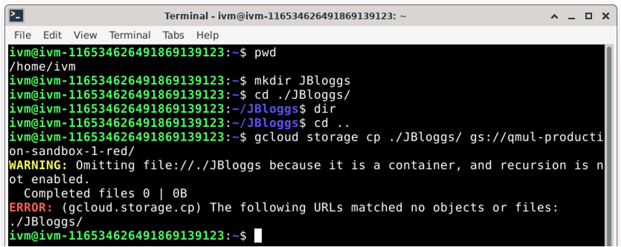
To successfully create a new directory or directory branch in red with gcloud storage you simply need to copy (or move) a file to the red bucket. The simplest is often to create an empty file using the linux touch command.
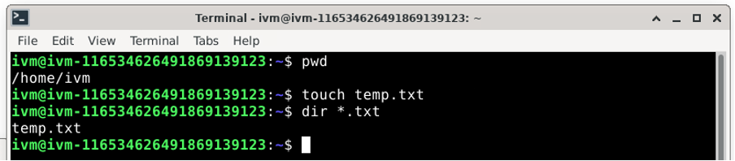
Now copy this empty file using:
So for example: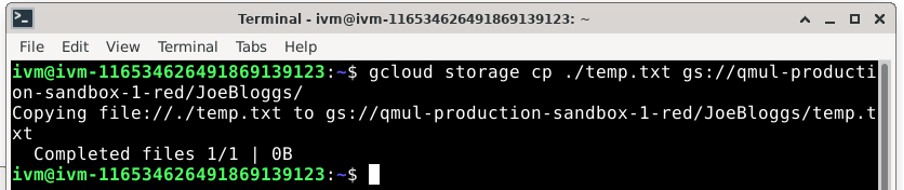
Do not forget to end the destination location with a / (forward-slash). If you do not, you will copy temp.txt into a file called JoeBloggs on the red folder.
You could also simply move the file using:
You can create further subdirectories by specifying them in the destination location. For example, if you wanted to create /red/JoeBloggs/Data/GWAS_data/Jan2024, you would do the following:
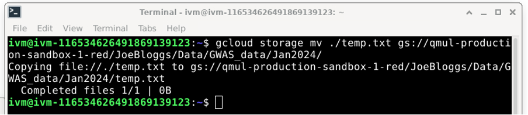
You now have created all the (virtual) sub-directories along the way:
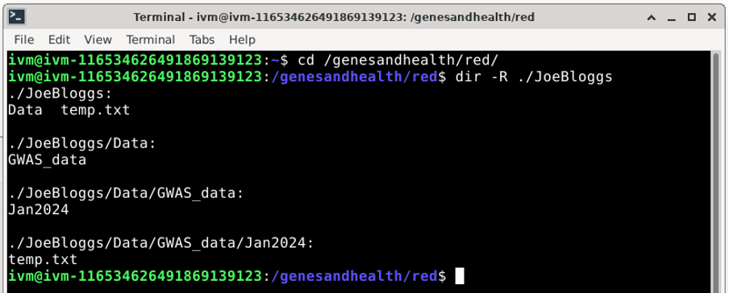
Please note that this will only upload new files or directories (as long as they contain at least one file or non-empty subdirectory) to the red bucket. Pre-existing files in red will not be affected. For example, you can see that the temp.txt file we created in /red/JoeBloggs/ when we used the gcloud storage cp ./temp.txt gs://qmul-production-sandbox-1-red/JoeBloggs/ command is still there. However, if you delete all files in a red bucket directory, you will also delete the virtual directory they are in.
In the example above, if you delete /red/JoeBloggs/Data/GWAS_data/Jan2024/temp.txt, you will lose directories Jan2024, GWAS_data and Data because all of these would end up empty.
Listing all buckets and files: ls command¶
You can use wildcards to match multiple paths, e.g.
This will list all .csv files in any directory in GWAS_Data which starts with Jan (e.g. Jan2022, Jan2023, Jan2024).
Uploading, downloading, and copying¶
The general format is:
We have seen how to upload files to Google Cloud with cp above when learning how to create a directory.
Copying an entire directory tree (i.e., directory, subdirectory, and all its content)¶
Use the --recursive option to copy an entire directory tree. The following command “uploads” the directory tree dir to the red directory:
Copying to your current (local) directory¶
In this example, the command will copy (“download”) all .txt files in JoeBloggs to your current local directory:
[Don’t forget the . at the end.]
Moving and renaming¶
The general template is:
Moving all objects from a local directory to a bucket¶
Note: All files will be moved from ./dir to /JoeBloggs/ (so will no longer be in ./dir) but the ./dir and any subdirectories in it will remain in the local directory.
Moving all objects from a bucket to a local directory¶
Renaming a file¶
gcloud storage mv gs://qmul-production-sandbox-1-red/JoeBloggs/old_name.txt gs://qmul-production-sandbox-1-red/JoeBloggs/new_name.txt
[Remember old_name.txt will be copied to new_name.txt and then old_name.txt will be deleted; if old_name.txt is very large, this may incur data charges.]
Alternative to gcloud storage: 1. the “Upload to red bucket” option in the File Manager¶
Uploading a file to red¶
To upload a file to red from another location (here my home folder on ivm), right click on the file and select “Upload to red bucket”.
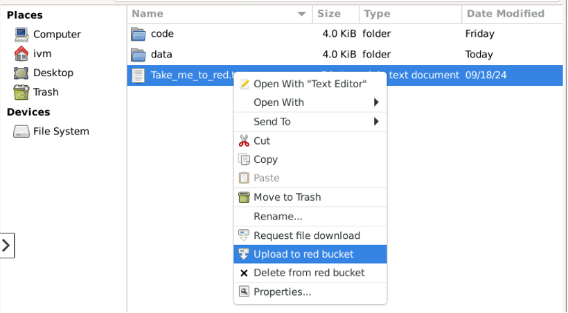
A new window should pop-up documenting the outcome, for example:
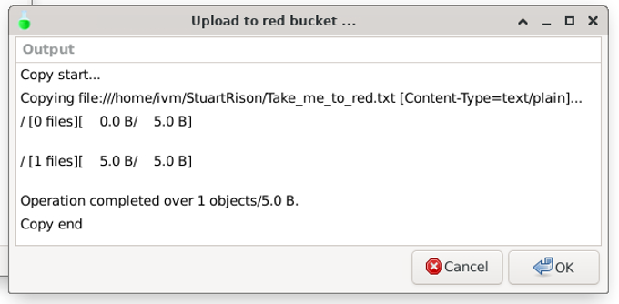
However, this will upload to file to the top directory in red. This is not recommended. Rather you should upload your files into your personal or project red directory.
Creating a new directory in red¶
If you want to create a new directory in red, you must upload one into it. Remember that a GCS simulated directory can only exists if it is accounted for by a file. If you try to upload an empty directory from a different location to red, you will get the following error:
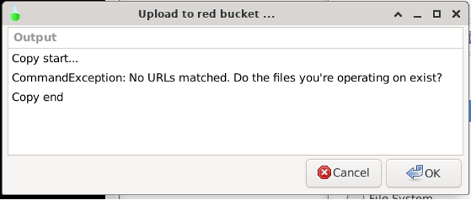
Your directory must contain at least one file to be uploaded to the red bucket.
To create a new directory in red, first create an identically named directory in /home/ivm/ using one of the two methods below:
Method 1: Creating a new directory and file in File Manager
To create a directory and file to upload to red in File Manager, right-click in empty space and select “Create New Folder”, then enter your folder name and click ‘OK’.
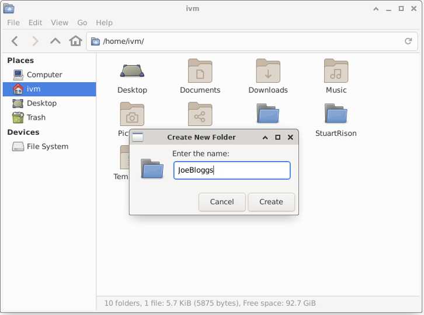
Now enter the new folder, right-click in empty space and select “Create Document / Empty File”
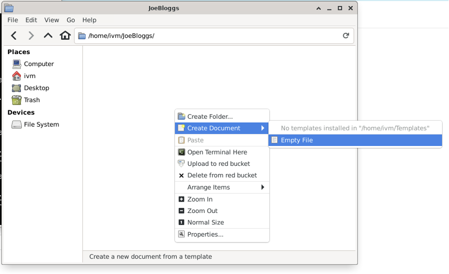
Give the file whatever name you want and click “Create”
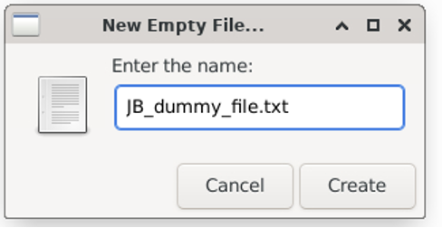
You now have a folder called JoeBloggs which contains an (empty) file called JB_dummy_file.txt.
Method 2: Creating a new directory and file in Terminal
To create a new directory using the Terminal, first create a directory using the mkdir command, enter the directory with the cd command and create an empty file in this directory with the touch command as illustrated below.
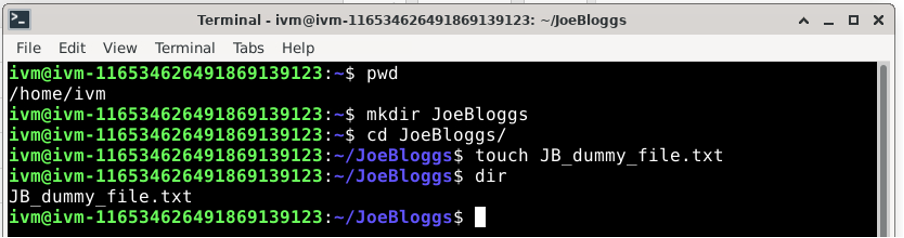
Using either of the methods above, you should end up with the following directory on /home/ivm/:
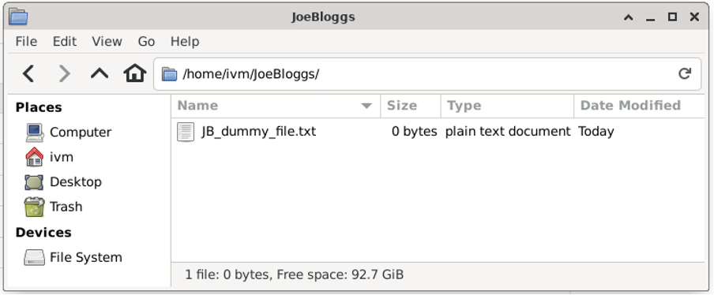
Now navigate back to the JoeBloggs directory, right-click on the directory icon and select “Upload to red bucket”.
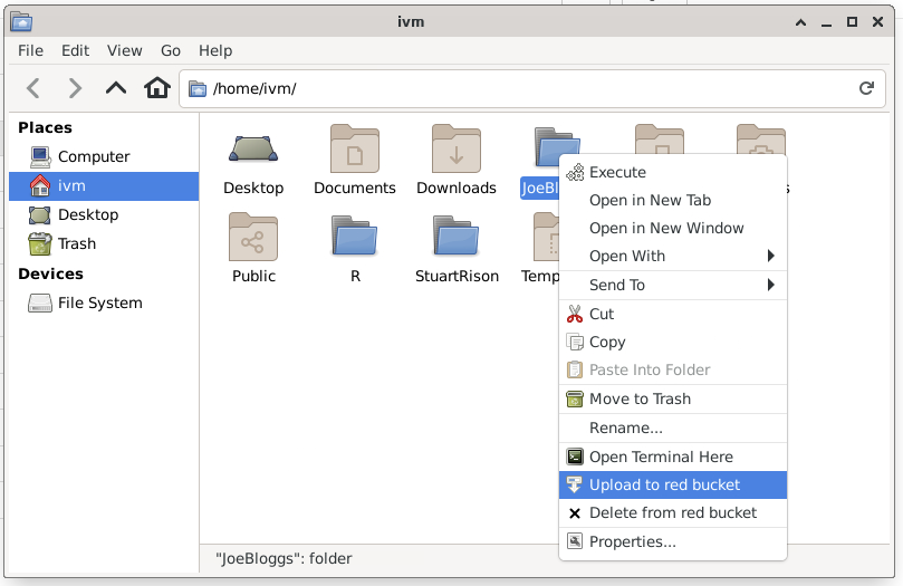
The red bucket now contains a (virtual) directory called JoeBloggs with the (empty) file JB_dummy_file.txt:
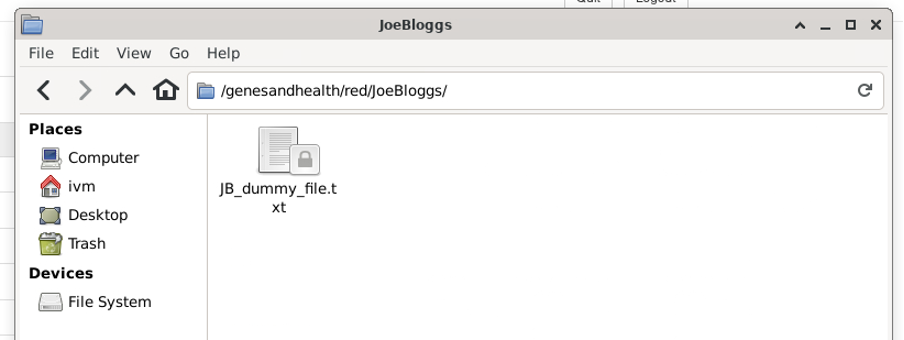
⚠️ BE CAREFUL, if you delete all files in a
redbucket directory, you will also delete the virtual directory. In this case, if you deleteJB_dummy_file.txt, theJoeBloggsdirectory will disappear.
Creating a sub-directory in the red bucket¶
To create a sub-directory in the red bucket, you need to create an identical directory tree in /home/ivm/ (or another drive allowing this) and upload this to red.
For example, suppose we wanted to create a JoeBloggs sub-directory called ‘JB_data_dir’ we would do the following:
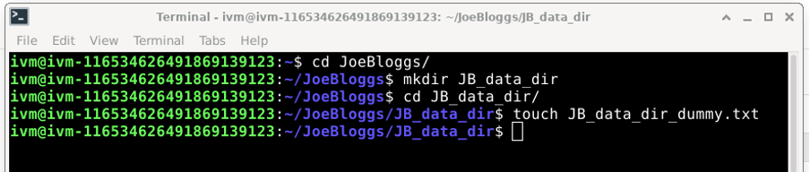
And then navigate to the JoeBloggs directory in /home/ivm/ and right-click “Upload to red bucket”:
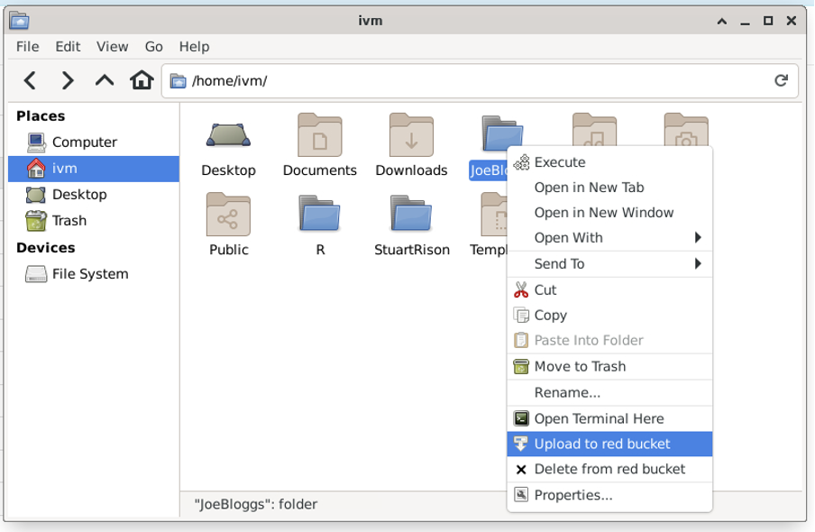
You now have the (virtual) directory structure /red/JoeBloggs/JB_data_dir/ in red with the file JB_data_dir_dummy.txt in the directory.
Info
- this will upload any new file or directory in the /home/ivm/JoeBloggs/ directory, for example, if you added “v_large_temp_file_that_should_definitely_not_be_moved.gz” in the /home/ivm/JoeBloggs/ directory, this will be uploaded to
red - the “Upload to red bucket” option will not replicate your /home/ivm/JoeBloggs/ directory to
red, it will only upload new files or directories (as long as they contain at least one file) to theredbucket. For instance, if you delete/home/ivm /JoeBloggs/JB_data_dir/and then select “Upload to red bucket” for/home/ivm /JoeBloggs/, there will still be a/red/JoeBloggs/JB_data_dir/directory.
Moving or renaming data in the red bucket¶
This is only possible using gcloud storage.
Alternative to gcloud storage: 2. Mounting the red bucket onto your VM¶
The red directory is currently available to the G&H virtual machines as read-only and lacks some user permissions. The ability to upload files to a specific sub-directory, moving/editing files directly inside the red bucket, and creating a new directory inside red by using a terminal requires the use of the “tricks” described in Option 1 or the use of gcloud storage commands.
Currently, there is no other GCS space available as read/write. There are on-going discussions with the developers of TRE to make the use of buckets easier for collaboration and sharing and this will hopefully be improved in the future.
As an alternative, you can mount a specific directory from red in your home directory.
What is mounting?¶
Mounting is a process by which a computer's (or in our case, a virtual machine’s) operating system makes files and directories on a storage device (such as hard drive, CD-ROM, or network shared drive) available for users to access via the computer's file system.
When you mount a GCS bucket directory onto virtual machine, you are essentially creating a mirror of the GCS bucket. However, you can handle this locally created mirror (i.e. the mounted directory) as a “normal” linux directory.
Be careful...
- Any change you make to the locally mounted directory will be replicated (mirrored) in the GCS bucket.
- Likewise, if you were to make changes directly in the GCS bucket, these would be replicated (mirrored) in the locally mounted directory.
How to mount a red directory to your VM?¶
Create a directory in your home directory with:
(Replace the [dir-name] with a directory name of your choice.)
Run the following command to mount a shared team directory from red to /home/ivm/[dir-name]:
Note
- All on a single line
- You must use double-quote (
") around$SANDBOX_PROJECT-red - Replace
MY_TEAM_DIRECTORYwith the name of a directory inred - You will need to repeat the
gcsfusecommand on each reboot of your Virtual Machine, as it won't persist.
All the members of your team should be able to run this command to have the same shared files in the /home/ivm/[dir-name] directory.
Mounting: illustrated example¶
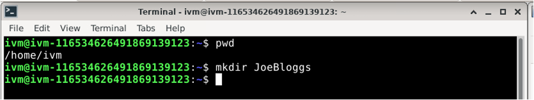
Creates a new (empty) directory on /home/ivm:
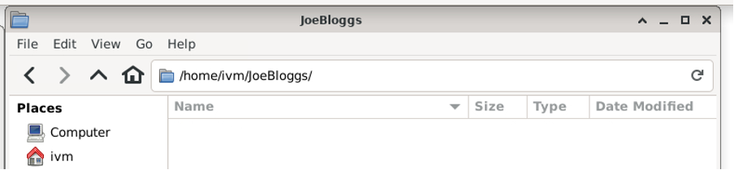
The equivalent directory on red is not empty (it contains several files and sub and sub-sub directories):
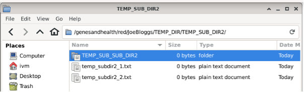
Now mount red’s JoeBloggs locally:
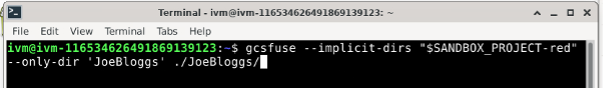
Which tells us:
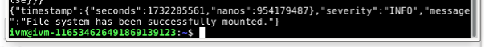
Now look at /home/ivm/JoeBloggs:
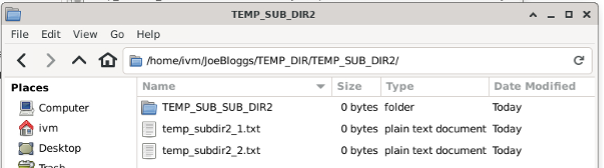
All the files, directories, sub and sub-sub directories from red’s JoeBloggs are mirrored.
But /home/ivm/JoeBloggs/ “behaves” like any linux directory:
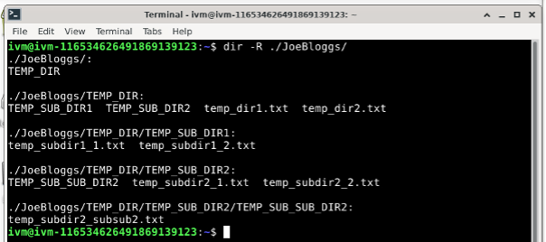
You can add files in any of these various directories:
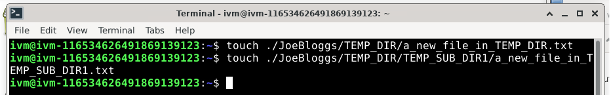
And they appear on the locally mounted JoeBloggs:
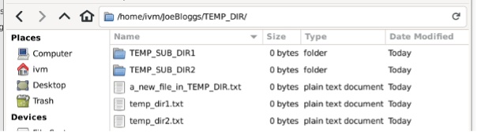
And
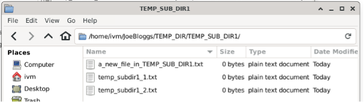
But they also appear in the red GCS bucket!
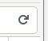
And
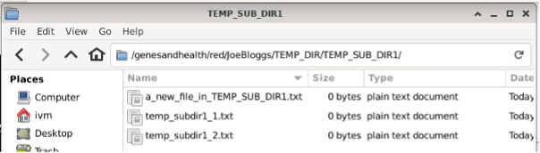
Info
You may have to click the refresh circular arrow in the top right corner to see the changes.
If you delete a file in the GCS red bucket:
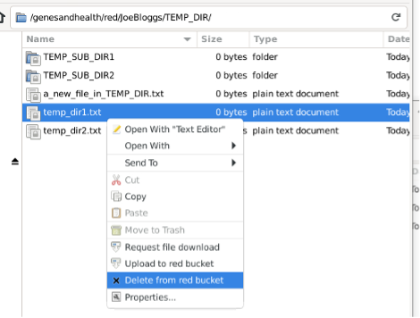
The file will also be deleted from the locally mounted mirror:
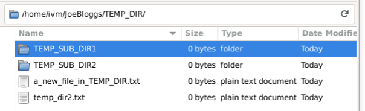
Likewise, if you delete a file in the locally mounted mirror:
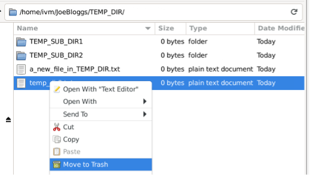
The file will also be deleted from the red GCS bucket:
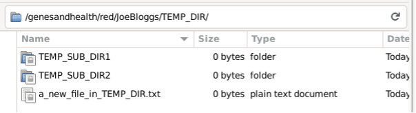